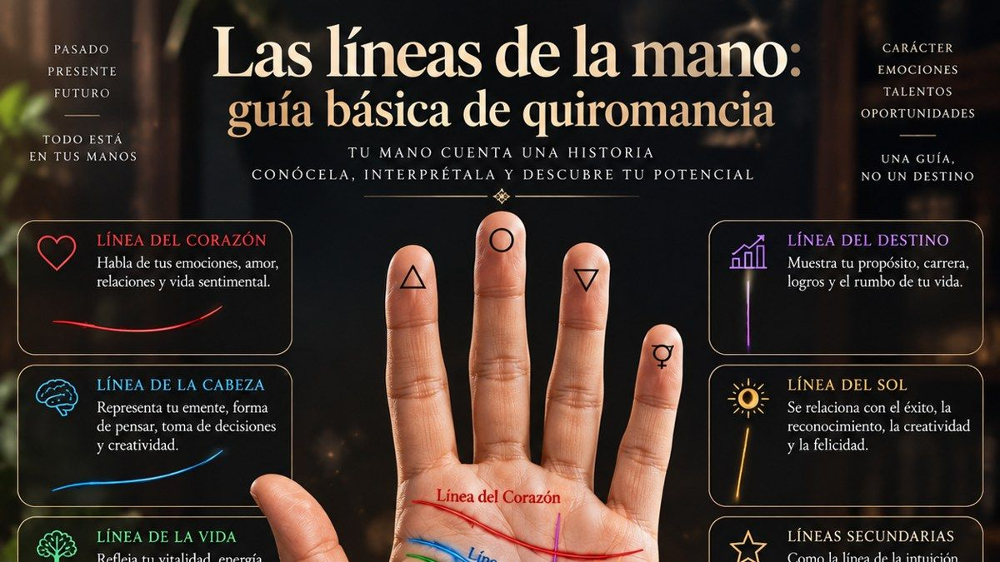

Las líneas de la mano: guía básica de quiromancia

La quiromancia, o lectura de manos, es una de las prácticas adivinatorias más antiguas del mundo. Aunque el mapa completo de una palma incluye docenas de líneas y montes, todo principiante puede empezar por las tres líneas principales, presentes en prácticamente todas las manos.
La línea de la vida
Rodea la base del pulgar, arqueándose hacia la muñeca. Contrario a la creencia popular, no predice la duración de tu vida, sino tu vitalidad, energía física y capacidad de recuperación ante los desafíos. Una línea profunda y bien marcada sugiere fortaleza vital; una línea con quiebres puede señalar etapas de cambios importantes.
La línea del corazón
Ubicada en la parte superior de la palma, bajo los dedos, esta línea habla de tu vida emocional y afectiva: cómo amas, cómo expresas tus sentimientos y tu forma de vincularte con los demás. Su punto de inicio y su profundidad ofrecen matices importantes sobre tu estilo emocional predominante.
La línea de la cabeza
Cruza la palma de forma horizontal, generalmente debajo de la línea del corazón, y refleja tu forma de pensar: si te inclinas más hacia lo analítico y práctico, o hacia lo creativo e imaginativo. Una línea larga y recta sugiere pensamiento lógico; una línea ondulada, mayor creatividad e intuición.
¿Mano dominante o no dominante?
Una convención muy usada es leer la mano no dominante como el "potencial" con el que naciste, y la mano dominante como lo que has moldeado activamente a través de tus decisiones de vida. Comparar ambas manos suele revelar información sorprendentemente reveladora sobre tu evolución personal.
Las líneas secundarias que pocos conocen
Más allá de las tres líneas principales, existen líneas secundarias que aparecen solo en algunas manos y aportan matices adicionales. La línea del destino (vertical, atravesando el centro de la palma) se asocia a la sensación de tener un propósito claro o una carrera definida. La línea del sol (paralela a la del destino, más hacia el dedo anular) habla de reconocimiento, creatividad y satisfacción personal. La línea de la intuición (curva sobre el lado de la mano contrario al pulgar) aparece solo en algunas personas y suele asociarse a una sensibilidad extrasensorial marcada.
Un vistazo a los montes de la mano
Además de las líneas, la quiromancia estudia los "montes" — las zonas elevadas y carnosas en la base de cada dedo y en los bordes de la palma, cada uno asociado a un planeta de la tradición astrológica. El Monte de Venus (base del pulgar) habla de vitalidad y capacidad amorosa; el Monte de Júpiter (base del índice), de ambición y liderazgo; el Monte de Saturno (base del dedo medio), de disciplina y responsabilidad. Un monte especialmente desarrollado suele intensificar las cualidades asociadas a ese planeta en la personalidad de quien lo posee.
¿Las líneas de la mano cambian con el tiempo?
Sí, y esto sorprende a muchos principiantes: aunque las líneas principales (vida, cabeza y corazón) se mantienen relativamente estables, pueden profundizarse, debilitarse o incluso desarrollar pequeñas ramificaciones nuevas a lo largo de los años, reflejando los cambios internos que atraviesa una persona. Por eso algunos quiromantes recomiendan fotografiar tu palma cada pocos años, como una especie de diario energético de tu propia evolución.
Cuando las líneas de la vida, la cabeza y el corazón se unen con la del destino pueden dibujar una figura muy buscada: aquí te explicamos qué significa tener la letra M en la mano.
✦ Pruébalo ahora Lee las líneas de tu mano → Fotografía tu palma con nuestra herramienta de quiromancia y descubre qué dicen tus líneas principales.
Preguntas frecuentes
¿Cuáles son las líneas principales de la mano y qué significan?
Las líneas principales suelen ser cuatro: vida, cabeza, corazón y destino. Tradicionalmente, la de vida se asocia con la vitalidad, la de cabeza con la mente, la de corazón con las emociones y la de destino con el rumbo personal.
¿La línea de la vida indica cuánto vas a vivir?
No. La línea de la vida rodea la base del pulgar y en quiromancia se interpreta como energía, vitalidad y cambios importantes, no como duración de la vida. Una línea corta o fina no predice nada negativo. Te recomiendo tomarla como un símbolo y no como un pronóstico médico ni un dato literal.
¿Qué dice la línea de la cabeza sobre mi forma de pensar?
Cruza la palma por el centro y se asocia con el pensamiento, la creatividad y la manera de tomar decisiones. Una línea larga se interpreta como mente analítica y una curva, como imaginación. Son lecturas tradicionales y simbólicas que varían según la escuela.
¿Qué mano se debe leer, la derecha o la izquierda?
Depende de la tradición. Una corriente dice que la mano dominante muestra lo que haces con tu vida y la otra lo que traes de base; otra propone leer la izquierda para lo innato y la derecha para lo adquirido. Lo habitual es observar ambas y compararlas. Son criterios simbólicos, no normas universales.
¿Qué te pareció este artículo? Cuéntanos tu experiencia.
¡Gracias por tu comentario!